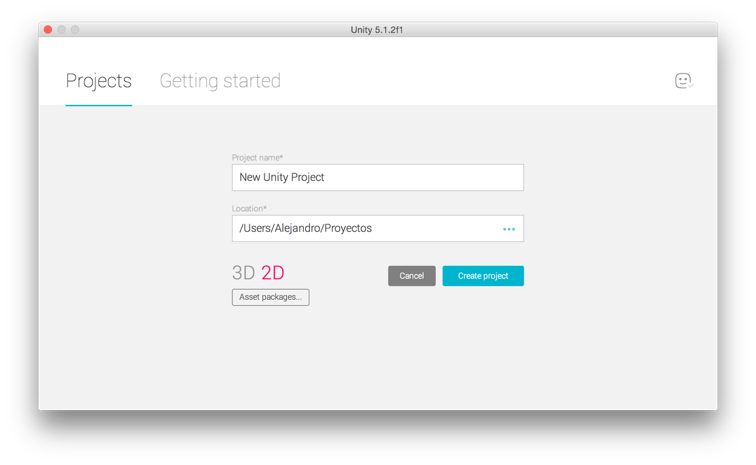
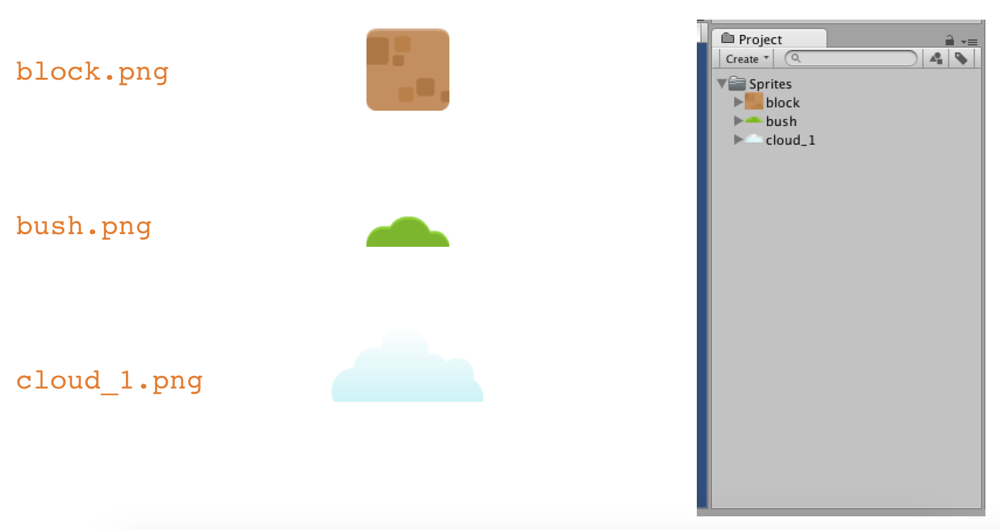
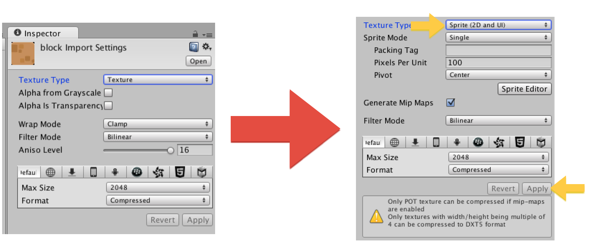
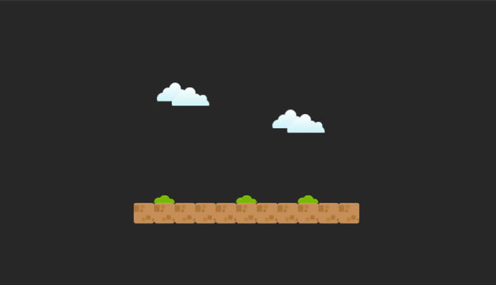

1. Descarga el archivo https://www.dropbox.com/s/ss1yka225gcxbwz/platformerArt_v4.zip?dl=0.
2. Crea un nuevo proyecto en Unity y selecciona la opción de 2D.
File > New Project

3. Crea una carpeta que se llame Sprites.
4. Importa en la carpeta Sprites las siguientes imágenes:

En el caso de que tus imágenes no se hayan manejado como sprites entonces:
5. Selecciona block.png dentro de la ventana Project y en el inspector modifica sus propiedades para que cumplan con los siguientes valores:

6. Realiza lo mismo para las demás texturas.
7. Arrastra las imágenes de Project a la ventana Hierarchy.
8. Duplicando los objetos, replica la siguiente escena:

9. Guarda la escena con el nombre que desees.
10. Anida todos los objetos block dentro de un objeto vacío Game Object > Create Empty con el nombre de Floor.
11. Al objeto Floor agrégale un componente que se llama BoxCollider2D (Physics2D > BoxCollider2D).
12. Ajusta el Collider para que coincida con el alto y ancho del piso.
13. Importa la imagen character > side.png, realiza el mismo proceso que las texturas anteriores
.
14. Coloca el sprite en la escena y da click en Play.
15. Agrega al alien (side.png). los componentes de Rigidbody 2D y Box Collider 2D. Da click en Play.
16. Crea el componente PlayerWalk2D.cs y colócalo en el Alien.
17. Dentro del componente modifica el Update para que coincida con lo siguiente:
18. Da click en Play y presiona las teclas y .
19. Importa la imagen coin_silver.png y sigue el mismo proceso que en los sprites anteriores.
20. Coloca el sprite en la escena.
21. Crea un componente que se llame Bullet2D y agrégalo como componente a coin_silver.
22. El componente Bullet2D tiene el siguiente código. Presiona Play.
23. Crea un prefab con la moneda. Para hacerlo, crea un nuevo folder en tu proyecto con el nombre de Prefabs, después da click derecho sobre el folder y selecciona Create > Prefab, coloca de nombre Bullet.
24. Arrastra Bullet (o coin_silver) de Hierarchy a tu prefab
25. Crea el componente PlayerShooter2D.
26. Adjunta el componente al Alien.
27. El contenido del PlayerShooter2D es el siguiente:
28. Arrastra el prefab Bullet al atributo Bullet Prefab en PlayerShooter2D (del Alien). Da click en Play y observa que sucede al presionar la tecla del mouse.
Modifica el código para que el personaje cambie su orientación cuando se presiona las flechas y .
Byl, P. (2012). Holistic game development with Unity an all-in-one guide to implementing game mechanics, art, design, and programming. Waltham, MA: Focal Press.
Platformer Pack Redux. http://opengameart.org/content/platformer-pack-redux-360-assets.